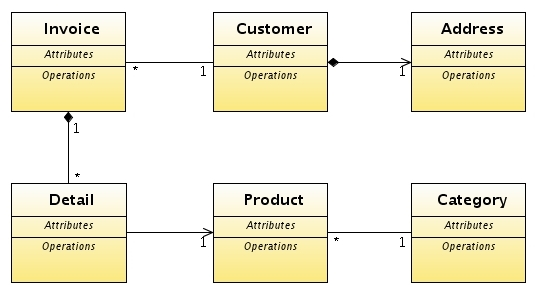
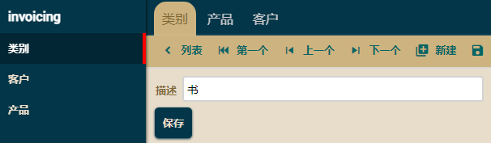
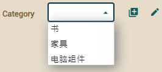
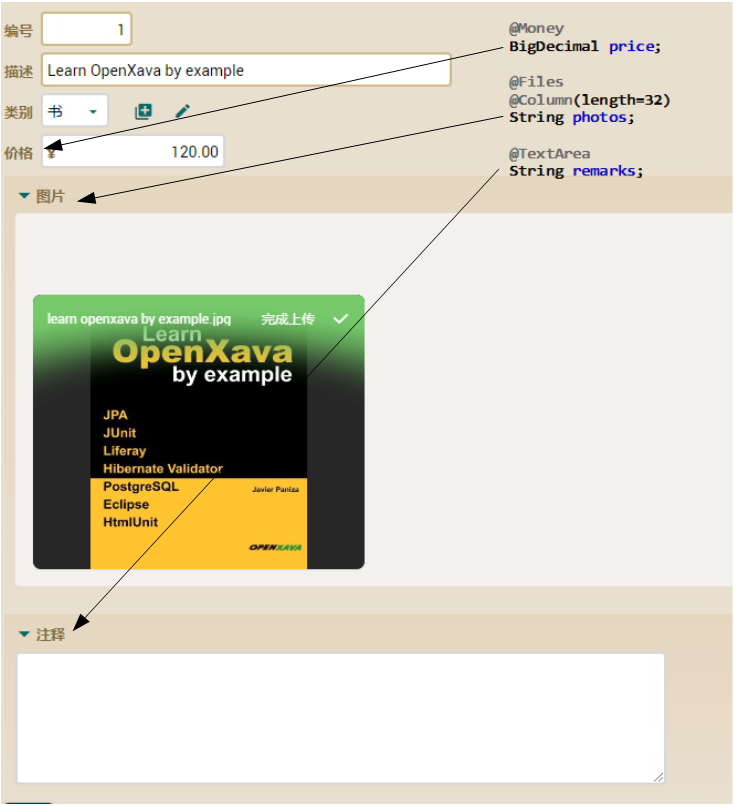
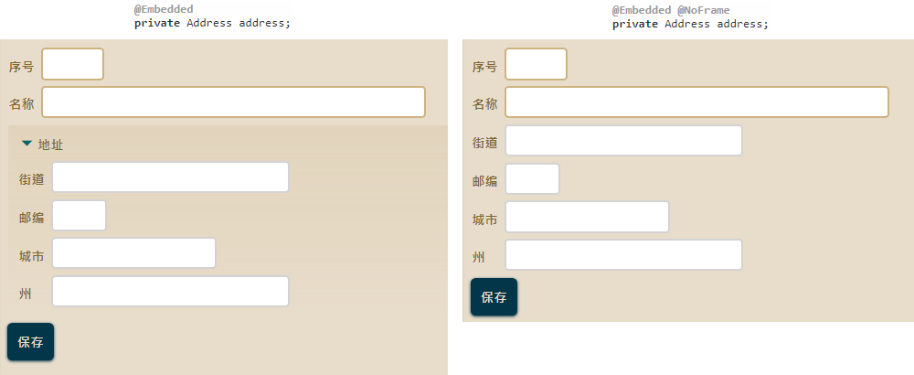

领域模型（Domain model）
首先，我们将为您的 invoicing 应用创建实体，虽然领域模型是很基本的但是足以学习很多。

我们将从六个类开始，稍后会添加更多。别忘了您已经有 Customer 和 Product 的最初版本。
引用多對一(ManyToOne) 作为描述列表（組合）
让我们从最简单的开始，先创建 Category 实体再将它与 Product 关联，将其作为一个组合显示。
Category 实体的代码是：
package com.yourcompany.invoicing.model;
import javax.persistence.*;
import javax.persistence.Entity;
import org.hibernate.annotations.*;
import org.openxava.annotations.*;
import lombok.*;
@Entity @Getter @Setter
public class Category {
@Id
@Hidden // 该属性不向用户显示。供内部识别
@GeneratedValue(generator="system-uuid") // 通用唯一识别码 (1)
@GenericGenerator(name="system-uuid", strategy = "uuid")
@Column(length=32)
String oid;
@Column(length=50)
String description;
}
它只有一个标识符和一个描述属性。这种情况我们使用 oid(1) 的算法生成 id。这生成器的优点是无需接触您的代码就能将应用程序迁移到另一个数据库（DB2、MySQL、Oracle、Informix 等）。其它 JPA 的 id 生成器都依赖数据库来生成id，从而使它们不像 UUID 一样可移植。
现在您可以运行应用并在 Category 模块添加一些类别：

现在，我们将把 Product 与 Category 关联，在您的 Product 实体中添加 Category 及以下注解：
public class Product {
...
@ManyToOne( // 该注解代表会在数据库作为一个关系保存
fetch = FetchType.LAZY, // 该注解代表会在使用时才加载
optional = true) // 该注解代表可以是空值（没有值）
@DescriptionsList // 该注解代表会以组合的方式显示
Category category; // 常规的 Java 引用
}
这是一个 JPA 多对一的关系，您可以在
附录 B了解更多。在这里，因为 @DescriptionsList 使它作为一个组合显示：

现在是时候完成您的 Product 实体了。
注解（Annotations）
Product 实体至少需要有价格，另外有照片和备注的话更好。我们将使用注解来做到这些。 Java 中的类、方法、变量、参数和包等都可以被标注，像是给代码上标签。
理解注解最好的方法就是看它如何使用。在 Product 实体中添加 price、photo 和 remark 属性，如下：
@Money // 该属性用于存储货币
BigDecimal price; // BigDecimal通常用于钱的数量
@Files // 会有一个图片库
@Column(length=32) // 该32长度的是保存图片库的键
String photos;
@TextArea // 会有一个文本区域，该注解是用于大文本或相似
String remarks;
您已经了解如何使用注解，现在您只需要写上注解， OpenXava 就会特殊处理它。现在如果运型应用并进入 Product 模块，在新建画面您可以看到：

如您所见，每个注解在用户界面都会产生效果，像各自有不同的大小、验证、编辑器等。此外我们所使用的是 OpenXava 内建的注解。
一些其它可用的注解是：@Password、@Money、 @TextArea、@Label、@DateTime、@Discussion、@Icon、@Telephone、@IP、@EmailList、 @MAC、@StringTime、@HtmlText、@Coordinates、@Files ，@File、等。如果您想知道更多，可以到
这里。
现在 Product 已经好了，接下来换 Customer。
可嵌入（Embeddable）
我们将在客户 Customer 添加地址 Address，由于地址并不跟其它客户共享，所以当客户被删除时，他的地址也一样会被删除。因此我们将地址概念建为可嵌入类，您可以在
附录 B中了解更多信息。
接下来我们将 Address 添加至您的项目中，其代码如下：
package com.yourcompany.invoicing.model;
import javax.persistence.*;
import lombok.*;
@Embeddable // 我们使用 @Embeddable 而不是 @Entity
@Getter
@Setter
public class Address {
@Column(length = 30) // 成员的注解与实体中的相同
String street;
@Column(length = 5)
int zipCode;
@Column(length = 20)
String city;
@Column(length = 30)
String state;
}
现在您看到常规的类如何被注解为 @Embeddable，它的属性跟实体相同方式注解，尽管可嵌入类不支持实体的所有功能。
现在您能在任何实体中使用 Address，只需在 Customer 添加它的引用：
public class Customer {
...
@Embedded // 这注解代表是可嵌入类
Address address; // 常规的 Java 引用
}
地址将跟客户存储在同一个表中，从用户界面视角，地址有一个框，如果您不喜欢可以使用 @NoFrame
// @NoFrame // 使用 @NoFrame 不显示地址（Address）的框
Address address; // 常规的 Java 引用
这是有和没框的差别

总结
在本章中您学会如何以组合显示的 @DescriptionList 注解，如何使用注解和 @Embeddable。现在基本的实体都好了，是时候面对应用程序的核心实体：发票 Invoice。这会在下一章开始。